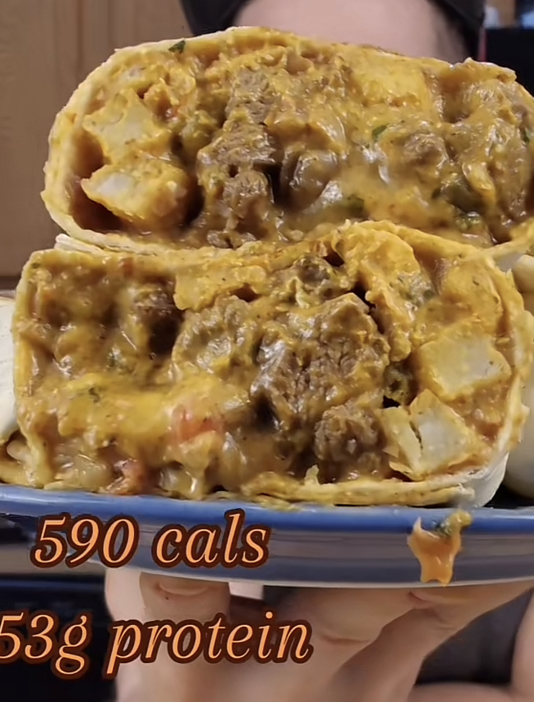

Description
These Chipotle Oregon burritos are spicy, packed with French fries and carne asada, are meal-preppable, and will have you harkening back to that Oregon Trail video game you played in elementary school... for some reason. They are also macro-friendly, with 590 calories, 53 grams of protein, and only 26 grams of fat per serving. In a recipe that makes 5 servings, you'll be enjoying these healthy, spicy wonders all week long. Let's get started!
Ingredients
Burrito Filling
- 1.5lb 96/4 lean ground beef
- 2.5oz green chiles
- 1.5 cups fat-free refried beans
- 1lb Ore-Ida fries or potatoes
- 1 cup reduced fat cheese
- 3/4 cup beef broth
- 5 low carb/high protein tortillas
Chipotle Sauce
- 3/4 cup fat-free Greek yogurt
- 1.25 cup light mayo
- Half-bundle fresh cilantro
- 2.5oz green chiles
- Small squirt of lime juice
- Garlic or Himalayan pink salt to taste
- Garlic powder to taste
- Onion powder to taste
Steps
- Spray potatoes/fries with cooking spray, salt to taste, then follow oven cooking instructions.
- Add a squirt of lime juice to refried beans, briefly stir, then cook beans in a pot on low heat.
- Add ground beef to a pan and season (taco seasoning, additional meat seasonings to taste).
- Brown the ground beef, then drain grease.
- Add beef broth and green chiles to beef. Simmer on low heat.
- Combine chipotle sauce ingredients in a bowl, then blend until smooth.
- On each tortilla, layer beans, sauce, potatoes, meat, then a portion of the cheese. Wrap the tortilla.
- Spray a pan with cooking spray, then fry each wrapped burrito until golden brown.